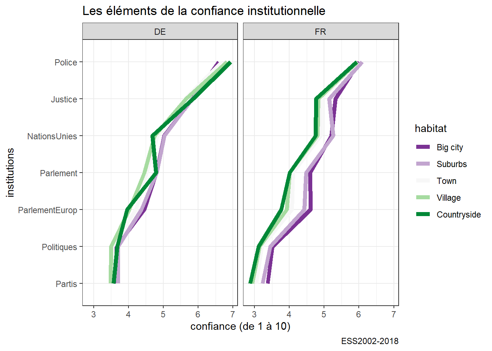
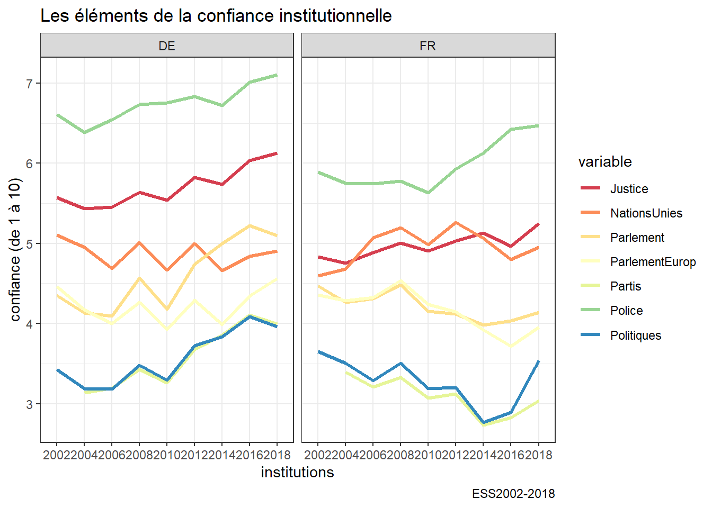
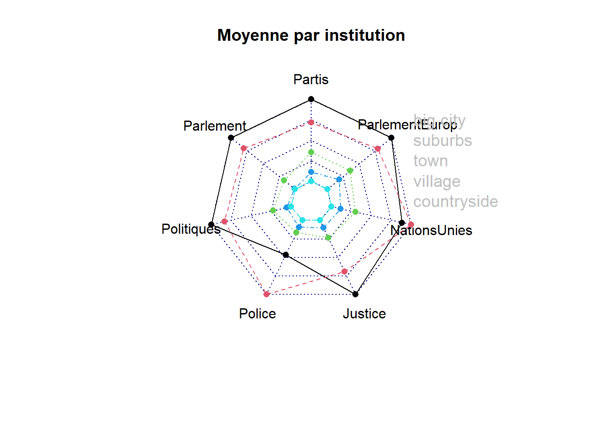

Chapitre 6 Analyse graphique multivariée
Dans ce chapitre, on généralise à des ensembles de variables.
6.1 Radar plot
rad<-df %>%
group_by (habitat,cntry) %>%
summarize(Partis=mean(Partis, na.rm=TRUE),
Parlement=mean(Parlement, na.rm=TRUE),
Politiques=mean(Politiques, na.rm=TRUE),
Police=mean(Police, na.rm=TRUE),
Justice=mean(Justice, na.rm=TRUE),
NationsUnies=mean(NationsUnies, na.rm=TRUE),
ParlementEurop=mean(ParlementEurop, na.rm=TRUE)) %>%
filter(!is.na(habitat)) %>%
gather(variable, value, -habitat, -cntry)
ggplot(rad, aes(x=reorder(variable, value),y=value, group=habitat))+
geom_line(aes(color=habitat), size=2)+
facet_grid(.~cntry) +coord_flip()+
scale_color_brewer(type="div",palette=3)+labs(title= "Les éléments de la confiance institutionnelle", caption="ESS2002-2018",y= "confiance (de 1 à 10)",x="institutions") 
rad<-df %>%
group_by (Year,cntry) %>%
summarize(Partis=mean(Partis, na.rm=TRUE),
Parlement=mean(Parlement, na.rm=TRUE),
Politiques=mean(Politiques, na.rm=TRUE),
Police=mean(Police, na.rm=TRUE),
Justice=mean(Justice, na.rm=TRUE),
NationsUnies=mean(NationsUnies, na.rm=TRUE),
ParlementEurop=mean(ParlementEurop, na.rm=TRUE)) %>%
gather(variable, value, -Year, -cntry)
ggplot(rad, aes(x=Year,y=value, group=variable))+
geom_line(aes(color=variable), size=1.2)+
facet_wrap(.~cntry, nrow=1) +
scale_color_brewer(palette="Spectral")+labs(title= "Les éléments de la confiance institutionnelle", caption="ESS2002-2018",y= "confiance (de 1 à 10)",x="institutions") 
La différence entre les deux pays est claire, la rupture est accusée plus fortement en france qu’en allemagne. L’explication n’est sans doute pas culturelle mais démographique, un coup d’oeil à la carte des densité permet de comprendre mieux : https://www.populationdata.net/cartes/allemagne-france-densite-de-population-2011/.
library(fmsb)
rad<-df %>% filter(cntry=="FR") %>%
group_by (habitat) %>%
summarize(Partis=mean(Partis, na.rm=TRUE),
Parlement=mean(Parlement, na.rm=TRUE),
Politiques=mean(Politiques, na.rm=TRUE),
Police=mean(Police, na.rm=TRUE),
Justice=mean(Justice, na.rm=TRUE),
NationsUnies=mean(NationsUnies, na.rm=TRUE),
ParlementEurop=mean(ParlementEurop, na.rm=TRUE)) %>% filter(!is.na(habitat)) %>% dplyr::select(-habitat)
#on doit indiquer les valeurs minimale et maximale - la fonction rep permet de repeter (ici 7 fois pour les 7 variables/col)
data <- rbind(rep(7,7) , rep(3,7) , rad)
#l'autre method c'est ce choisir maxmin=FALSE
rownames(rad) <- c("big city", "suburbs" ,"town","village", "countryside")
radarchart(rad, axistype=0, seg=4, title="Moyenne par institution", maxmin=FALSE)
legend(x=0.7, y=1, legend = rownames(rad), bty = "n",text.col = "grey", cex=1.2, pt.cex=3)